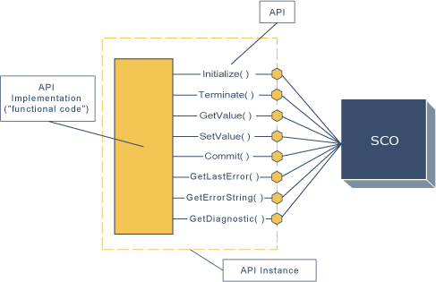

API Overview (continued)

A key aspect of the API is to provide a communication mechanism that allows the SCO to communicate with the LMS. It is assumed that once the SCO is launched it can then store and retrieve information with a LMS. All communication between the LMS and the SCO is initiated by the SCO. There is currently no supported mechanism for LMSs to initiate calls to functions implemented by a SCO.